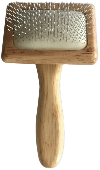
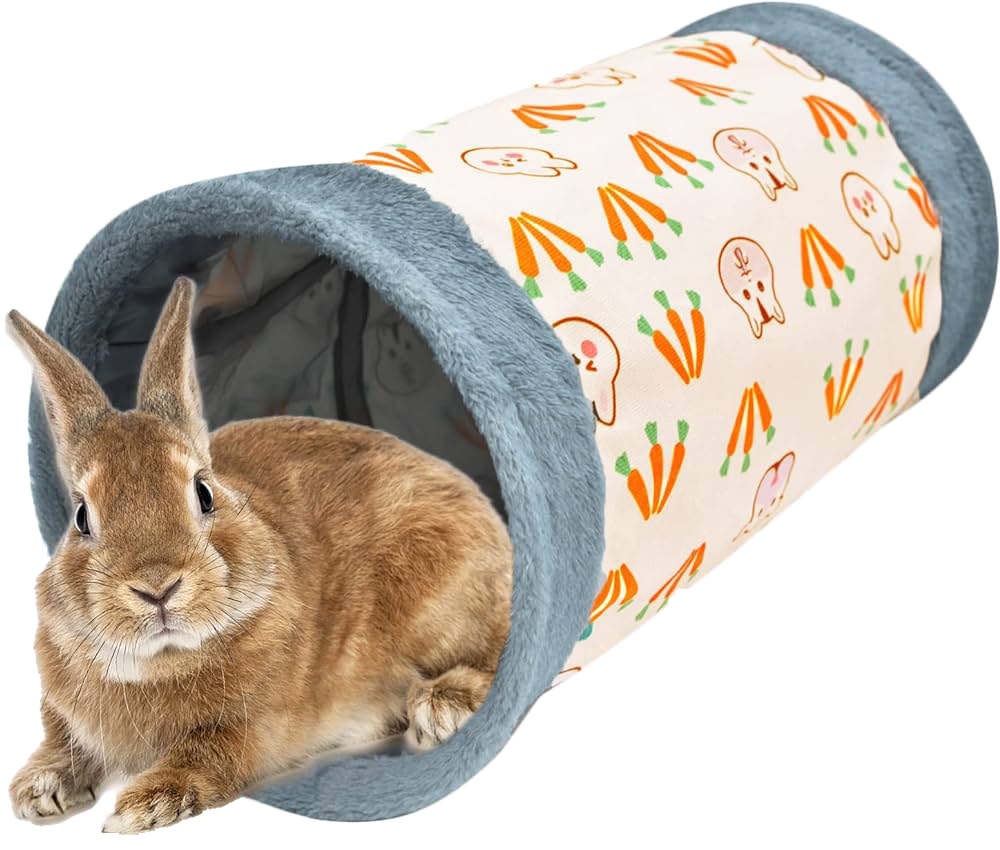
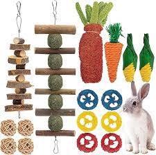

Soins

-
Assurez-vous que les lapins soient bien toilettés, en particulier les lapins
à poils longs.
-
Vérifiez régulièrement les griffes des lapins et coupez-les si nécessaire.
-
Contrôlez régulièrement les dents pour détecter tout signe de malocclusion
ou d'autres problèmes dentaires.
-
Consultez un vétérinaire spécialisé en animaux exotiques pour tout problème
de santé.
Environnement

-
Assurez-vous que l'enclos est spacieux et sécurisé pour permettre aux lapins
de se mouvoir librement.
-
Offrez un habitat propre et sec avec un accès constant à du foin et à de
l'eau fraîche.
-
Utilisez des litières appropriées, comme des granulés de bois ou des papiers
recyclés.
-
Évitez les produits de nettoyage toxiques ou agressifs dans l'aire de vie
des lapins.
-
Proposez des espaces de cachette et de jeu pour stimuler l'activité et la
curiosité des lapins.
Jouets

-
Utilisez des jouets en bois non traité, comme des branches ou des jouets
achetés en animalerie.
-
Les balles de foin ou les jouets à mâcher sont excellents pour les lapins,
aidant à maintenir leurs dents en bonne santé.
-
Évitez les jouets contenant des petits morceaux détachables ou des éléments
dangereux.
-
Assurez-vous que les jouets sont adaptés à la taille de votre lapin et ne
présentent pas de risques d'étouffement.